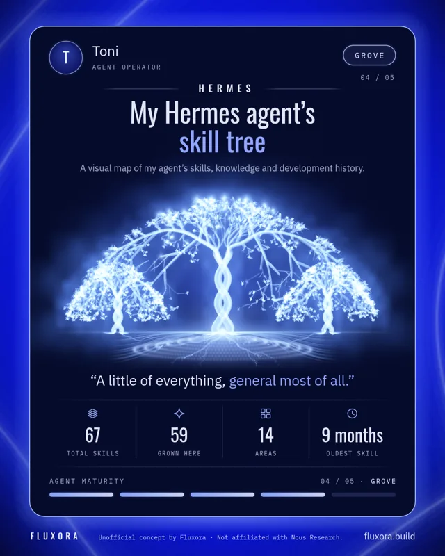

Hermes / installed playbooks
Toni’s skill tree.
Drawn in your browser, not a screenshot. Zoom in, drag around, or choose a branch.
An installed-skill inventory snapshot, rendered locally.

Drag · pinch or scroll to zoom · keyboard + / − / arrows / 0
This is a manually refreshed inventory snapshot, not a live feed from the VPS. Each tip represents an installed playbook, including disabled ones. Private skill names, contents, conversations and credentials are not published. The drawing is illustrative, not a learning-age or proficiency score.